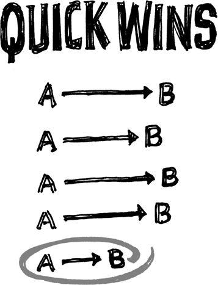

{% include JB/setup %}
{% raw %}
<div>

<h2 id="filepos124302" class="calibre19"><span class="calibre2"><a class="calibre13"></a><strong class="calibre14">Good enough is fine</strong></span></h2><div class="calibre4"></div>
<p class="calibre7">A lot of people get off on solving problems with complicated solutions. Flexing your intellectual muscles can be intoxicating. Then you start looking for another big challenge that gives you that same rush, regardless of whether it's a good idea or not.</p>
<p class="calibre17">A better idea: Find a judo solution, one that delivers maximum efficiency with minimum effort. Judo solutions are all about getting the most out of doing the least. Whenever you face an obstacle, look for a way to judo it.</p>
<p class="calibre17">Part of this is recognizing that problems are negotiable. Let's say your challenge is to get a bird's-eye view. One way to do it is to climb Mount Everest. That's the ambitious solution. But then again, you could take an elevator to the top of a tall building. That's a judo solution.</p>
<p class="calibre17">Problems can usually be solved with simple, mundane solutions. That means there's no glamorous work. You don't get to show off your amazing skills. You just build something that gets the job done and then move on. This approach may not earn you oohs and aahs, but it lets you get on with it.</p>
<p class="calibre17">Look at political campaign ads. A big issue pops up, and politicians have an ad about it on the air the next <a class="calibre16"></a>day. The production quality is low. They use photos instead of live footage. They have static, plain-text headlines instead of fancy animated graphics. The only audio is a voice-over done by an unseen narrator. Despite all that, the ad is still good enough. If they waited weeks to perfect it, it would come out too late. It's a situation where timeliness is more important than polish or even quality.</p>
<p class="calibre17">When good enough gets the job done, go for it. It's way better than wasting resources or, even worse, doing nothing because you can't afford the complex solution. And remember, you can usually turn good enough into great later.</p>
<p class="calibre3"><a class="calibre16"></a></p><div class="calibre4"></div>
<div class="mbppagebreak" id="calibre_pb_70"></div></div>

{% endraw %}

